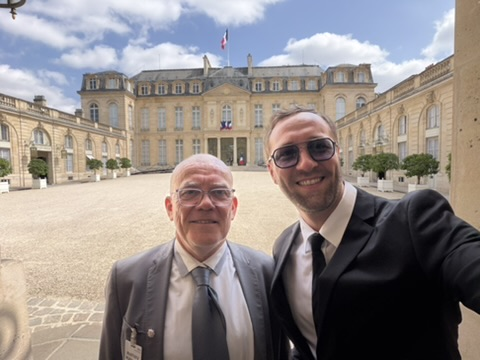
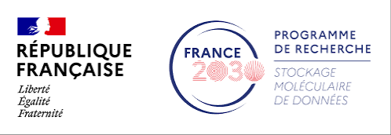
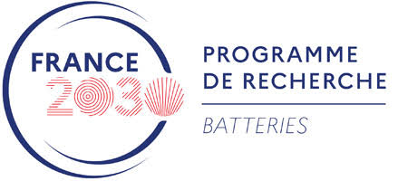

Gut-hormone biomarkers resolved in human serum
Published in Small, this study demonstrates discrimination of sulfated and unsulfated CCK-8 biomarkers in 20% human serum.
View publicationSelected publications, collaborations, team milestones and scientific events from the Cressiot nanopore research programme.
A year of new single-molecule results, expanding applications and growing collaborations.
Published in Small, this study demonstrates discrimination of sulfated and unsulfated CCK-8 biomarkers in 20% human serum.
View publication
Benjamin Cressiot and Pierre Defrenaix (Excilone) met at the Palais de l’Élysée to discuss the future of DreamPore, a startup hosted at CY Cergy Paris Université, and the development of nanopore-based molecular diagnostics.
Funding & innovation
A major contribution advancing the use of nanopores to resolve molecular information at the single-molecule level.
Explore the publication record

Ongoing participation in PEPR MolecularXiv, PEPR SENSIGA and the PROMETHEUS ecosystem broadens the reach of nanopore science.
Explore programmesPostdoctoral researcher Soching LUIKHAM, recruited in October 2025 to work on synthetic-polymer detection and molecular information reading, joins doctoral researchers Laura Ratinho and Luca Iesu; the team also welcomes Mélanie De Magalhaes, Kalifa Sidibé and Ilies Hakimi in 2026.
Meet the team
New results strengthen the programme on molecular discrimination, peptide structure and nanopore transport.
See publications
The work expands the ability of nanopores to distinguish closely related peptide structures and biologically relevant variants.
Read the research highlights